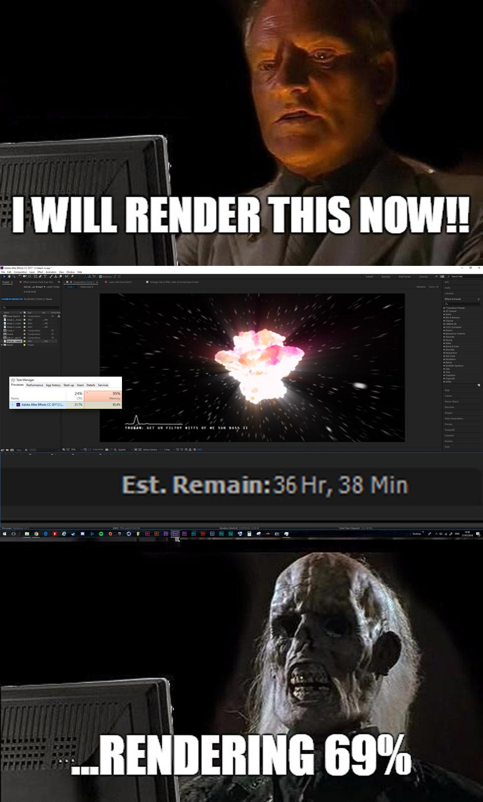
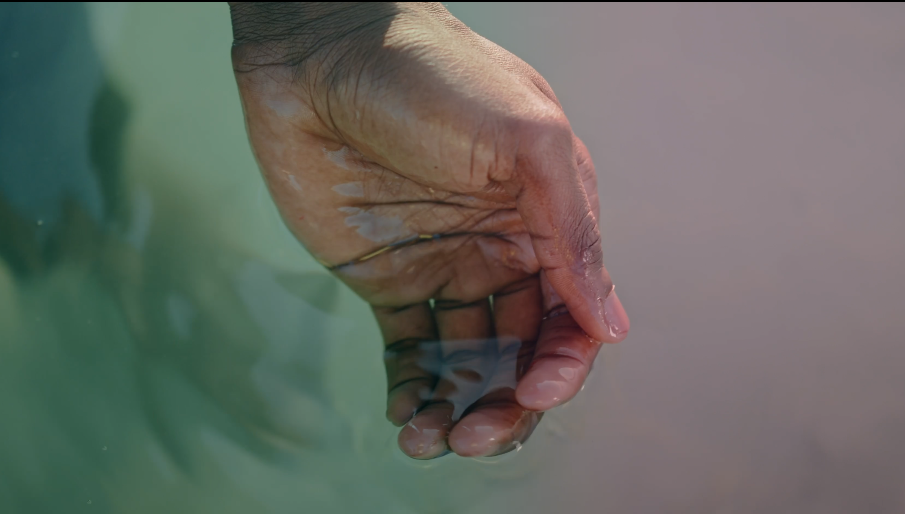
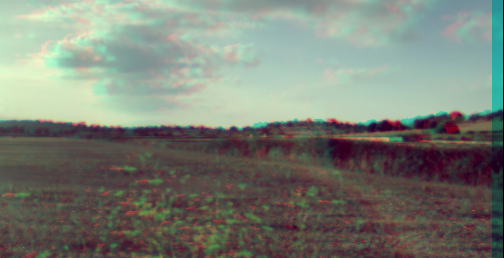
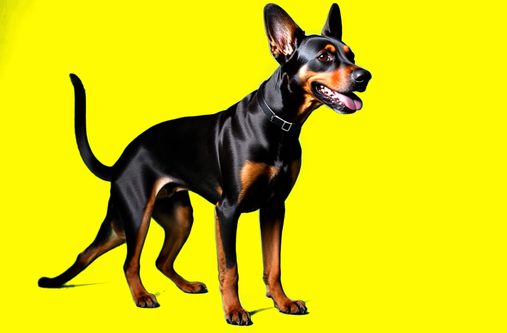
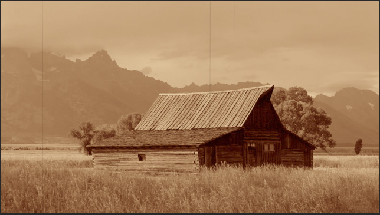
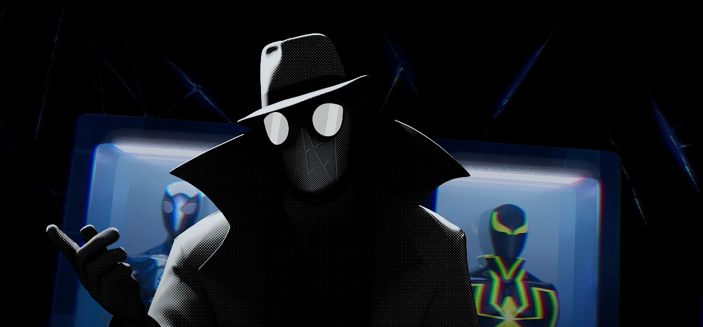
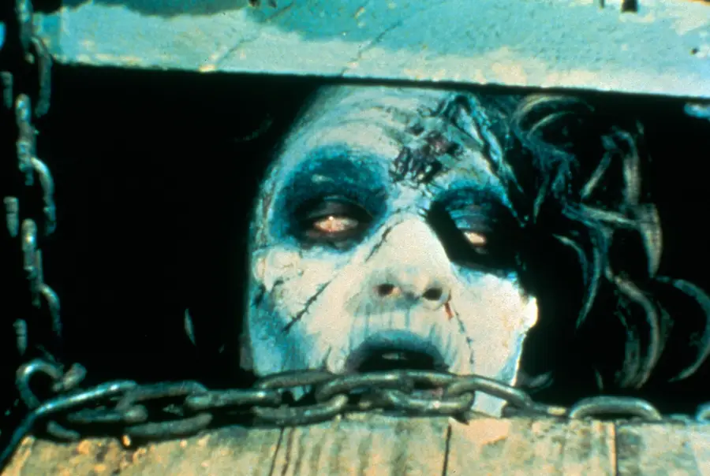
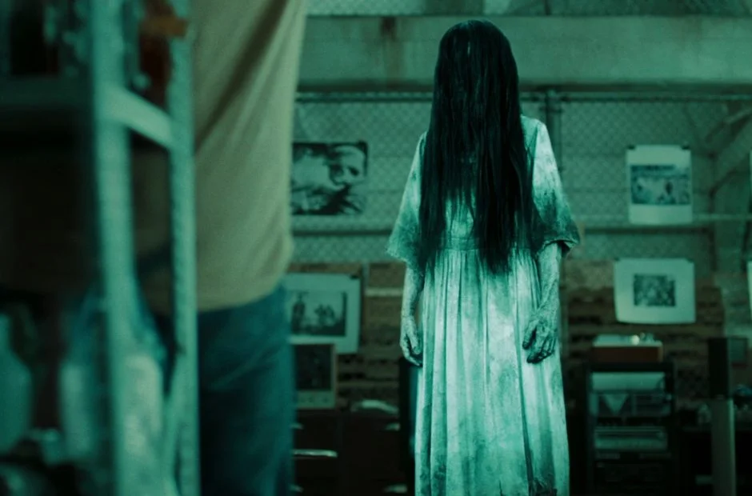
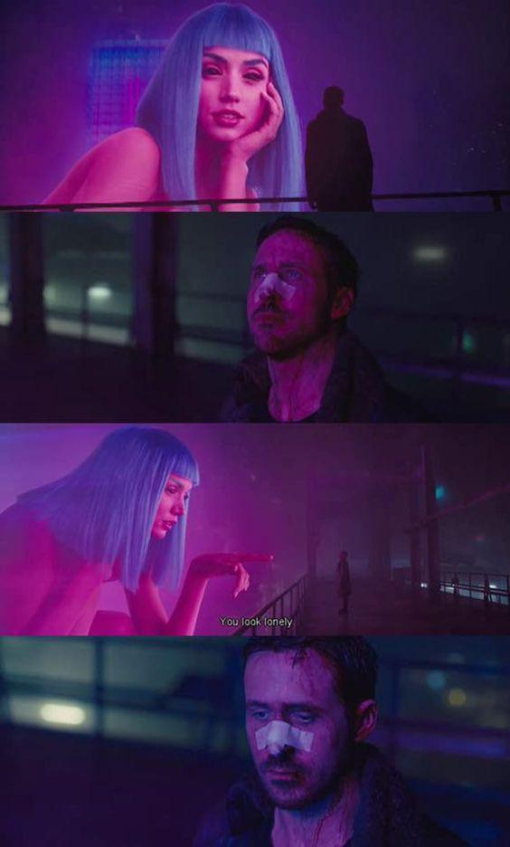

Cours 5 - Effets, colorisation et rendu¶

Ordre du jour¶

- Retour sur l'examen
- Visionnement de l'exercice mosaique
- La colorisation dans Da Vinci Resolve
- Rendu
- Présentation de l'examen
Retour sur l'examen¶
Le cumulatif des notes est disponible sur Teams. Voici ce que je retiens de la partie captation :
- Bien dans l'ensemble
- Attention de bien ouvrir les pattes des trépieds
- Encore de la difficulté avec trouver le milieu entre sous-exposé et sur-exposé
- ISO souvent très haut (max 1600) sinon l'image devient granuleuse (noisy)
- Shutter speed = framerate x2 (1/60sec pour 30img/sec et 1/120sec pour 60img/sec)
- Ne pas oublier de régler son fps
- Ne pas oublier de faire le white balance
Écoute des devoirs (exercice mosaique)¶
Les effets dans Da Vinci Resolve¶
Comme nous l'avons vu, Da Vinci Resolve réunit tous les outils nécessaires à la réalisation d'un film dans un seul programme. En ce qui concerne les effets spéciaux, il est possible de combiner en utilisant le module Fusion. Néanmoins, c'est à partir de la bibliothèque d'effets que nous allons travailler.
Les effets sont variés, mais puissants. Ainsi, on y retrouve de la 3D, du keying (green screen), du tracking (suivi de position), des particules, des émulations (camera shake, bloom, etc.), des transformations (position, échelle, etc.), des déformations (vague, ondes, etc.) et bien plus encore.
En ce qui nous concerne, nous allons faire un tour d'horizon, mais vous serez invité à explorer pour l'examen de montage.
Comment ajouter un effet¶
Tout se passe sur la page Montage (Edit), à partir de deux panneaux : la bibliothèque d'effets (Effects, en haut à gauche) et l'inspecteur (Inspector, en haut à droite).
-
Ouvrir la bibliothèque d'effets (Effects) et repérer les catégories :
- Boîte à outils (Toolbox) : transitions vidéo, transitions audio, titres, générateurs et effets de base
- Effets Open FX (Open FX) : les filtres (flou, halo, incrustation, stylisation, etc.)
- Effets audio (Audio FX) : les traitements sonores
-
Appliquer l'effet en le glissant directement sur le clip visé dans la ligne de temps (timeline). Une transition se dépose plutôt sur le point de coupe entre deux clips.
-
Régler l'effet dans l'inspecteur (Inspector), sous l'onglet Effets (Effects). Chaque effet y apparaît avec ses paramètres.
-
Animer un paramètre (facultatif) en cliquant sur le losange à droite de celui-ci pour créer une image clé (keyframe), puis en déplaçant la tête de lecture (playhead) avant de modifier la valeur.
-
Retirer un effet en le sélectionnant dans l'inspecteur et en cliquant sur l'icône de corbeille.
Pour appliquer un même effet à plusieurs clips d'un coup, utilisez un plan d'effets (Adjustment Clip, dans Boîte à outils → Effets) : déposez-le sur une piste au-dessus de vos clips et appliquez-lui l'effet. Tout ce qui se trouve dessous est affecté.
La colorisation dans Da Vinci Resolve¶
Comme nous en avons discuté, au départ Da Vinci Resolve était simplement un outil de correction de couleurs. Bien que son usage soit aujourd'hui étendu, le module de colorisation du logiciel reste inégalé.
La colorisation se fait donc à partir de la page Color qui est organisée avec des outils de mesure (Scopes) et d'ajustement (Color Wheels).
Les Scopes permettent de mesurer la luminosité et l'intensité des couleurs alors que les Color Wheels en permettent l'ajustement.
En ce qui nous concerne, nous allons simplement ajuster les paramètres de contraste, highlight, shadow et saturation.
De manière un peu plus avancée, nous allons nous intéresser à la balance des couleurs en utilisant des courbes selon des mesures dans les scopes.
Les Outils¶
Les Nodes¶
| Node | Raccourci | Usage principal |
|---|---|---|
| Serial | Alt + S | Workflow linéaire, corrections en série |
| Parallel | Alt + P | Corrections indépendantes en parallèle |
| Layer Mixer | Alt + L | Corrections superposées avec modes de fusion |
| Outside | Alt + O | Corriger l’extérieur d’un masque/qualif |
| Splitter & Combine | Alt + Y | Travailler canal par canal (R, G, B, Luma) |
Les Scopes¶
-
Oscilloscope
- L'oscilloscope (ou Waveform Monitor) nous aide à bien voir la luminance de notre image. L'échelle va de 0 à 1023. On essaie de ne jamais atteindre le 0 ni le 1023.
-
Parade (rgb parade)
- L'outil Parade permet de bien juger la balance des couleurs.
-
vectorscope
- Le Vectorscope nous permet de bien repérer les couleurs de la peau.
Les outils de corrections¶
- Roues colorimétriques
- Mixeur RVB
- Courbes
- Déformation de couleur
- Sélecteur HSL
- Power Window
- Tracker
- Alpha
Exercices¶
1. Créer un look Polaroid avec le mode Log¶
🛠️ Log Wheels¶
- Créer un Serial Node (Alt + S)
- Passer en mode Log Wheels
- Ajuster :
- Highlights → rose/orange (adoucir et réchauffer)
- Midtones → magenta/violet (donner une teinte artistique)
- Shadows → cyan/bleu (refroidir légèrement)
- Ajouter une légère saturation
🛠️ Glow (Lueur diffuse)¶
- Créer un Serial Node (Alt + S)
- Régler le Seuil de brillance (~0.31)
- Régler la Diffusion (~1.21)
- Ajuster la Diffusion relative : rouge ↑ / bleu ↓
- Régler le Gain (~0.40)
2. Créer un look Duotone¶
🛠️ Création d’un Duotone¶
- Créer un Serial Node (Alt + S)
- Désaturer avec le RGB Mixer (Monochrome activé)
- Appliquer une teinte dans les Shadows
- Appliquer une teinte contrastée dans les Highlights
- Ajuster les Midtones pour équilibrer
- Affiner avec les Curves
3. Utilisation des Layer Nodes¶
🛠️ Correction avec Layer Nodes¶
- Créer un Layer Node (Alt + L)
- Sélectionner un personnage avec le Sélecteur 3D (layer supérieur)
- Désaturer l’arrière-plan (layer inférieur)
4. Utilisation des Parallel Nodes¶

🛠️ Correction avec Parallel Nodes¶
- Créer deux Parallel Nodes (Alt + P)
- Dans le premier, ajouter une Power Window avec dégradé et appliquer une couleur
- Dans le second, ajouter une Power Window avec dégradé et appliquer une autre couleur
5. Isoler un personnage et flouter l’arrière-plan¶
🛠️ Isolement avec Power Window¶
- Créer une Power Window autour du personnage
- Adoucir avec la Softness
- Tracker le mouvement
- Inverser la sélection et appliquer un Blur
6. Effet de séparation des couleurs (Combine Node)¶

🛠️ Séparation des canaux¶
- Créer un Splitter & Combiner (Alt + Y)
- Créer des nodes distincts pour chaque canal (R, G, B)
- Décaler chaque canal pour obtenir l’effet, dans échelle et échelle de noeuds.
- Ajouter un effet de blur pour chaque canal (R, G, B)
- Ajouter un node en série (Alt + S) et désaturer un peu l'image.
7. Keying pour isoler une couleur¶

🛠️ Keying d’une couleur¶
- Sélectionner la couleur avec le Qualifier
- Affiner avec Threshold, Clean Black/White, Denoise
- Appliquer l’effet dans des nodes séparés
Les étapes de base¶
-
Ouvrir la page Étalonnage (Color) et sélectionner le clip à traiter dans la barre de vignettes, en haut de l'écran.
-
Lire les oscilloscopes (Scopes) avant de modifier quoi que ce soit : la forme d'onde (Waveform) pour juger l'exposition, la parade RVB (Parade) pour juger la balance des couleurs.
-
Corriger l'exposition avec les roues chromatiques (Color Wheels) : Lift pour les ombres, Gamma pour les tons moyens, Gain pour les hautes lumières.
-
Ajuster le contraste pour écarter les noirs et les blancs, sans écraser l'information aux extrémités.
-
Corriger la balance des couleurs pour retirer les dominantes (image trop bleue, trop orangée, etc.), en visant un blanc neutre dans la parade RVB.
-
Ajuster la saturation, généralement en dernier.
-
Uniformiser les plans d'une même scène entre eux (voir la correspondance de plan, plus bas).
L'ordre compte : sur une première node, on corrige d'abord pour rendre l'image juste et sur une autre node en série, on stylise ensuite pour lui donner un look. Autrement pour donner un look sur l'ensemble du film, on peut aussi utiliser un calque d'effets.
La correspondance de plan (Shot Match to This Clip)¶
Resolve peut aligner automatiquement l'étalonnage d'un plan sur celui d'un autre. C'est très pratique pour uniformiser une scène tournée sur plusieurs heures ou avec deux caméras.
-
Étalonner d'abord un plan de référence, celui qui représente le mieux le résultat voulu.
-
Sélectionner le plan à corriger dans la barre de vignettes : c'est lui qui sera modifié.
-
Faire un clic droit sur la vignette du plan de référence, puis choisir Shot Match to This Clip.
-
Vérifier le résultat dans les oscilloscopes et ajuster à la main au besoin : la correspondance est un point de départ, rarement une finition.
Attention à ne pas inverser les deux plans : le plan sélectionné est celui qui change, alors que le plan sur lequel on fait le clic droit sert de référence.
Le résultat est meilleur quand les deux plans ont été tournés dans des conditions semblables (même éclairage, même exposition, même balance des blancs). Des plans trop différents demanderont une correction manuelle.
Choix de couleurs en vidéo¶
En montage vidéo, les filtres appliqués sur un plan aident à guider le mood d'une scène simplement par le choix d'une couleur. Sans plus loin dans les détails, voici quelques exemples emblématiques couramment utilisés au cinéma et à la télévision.
Nuancier — Six looks cinématographiques¶
Orange & Teal¶
Le look orange & teal est un des plus dominant au cinéma. En utilisant le contraste entre la teinte de la peau et la complémentarité de l'environnement, les sujets humain ressortent instantanément du décor.
- Émotion : Tension, action, épique
- Harmonie : Complémentaire

Sépia / Vintage¶
Le look Sépia / Vintage imite le rendu de la pellicule traditionnelle. La teinte chaude désaturée évoque le passé, le rêve ou la mémoire.
- Émotion : Nostalgie, mémoire, authenticité
- Harmonie : Monochromatique brun-jaune

Film noir¶
Le look Film noir supprime totalement la couleur. Selon le contraste utilisé, l'ombre peut devenir un espace menaçant (avec un contraste fort) ou la lumière peut devenir apaisante (pour un contraste faible). Cet effet peut parfois être amplifié en laissant une seule teinte visible (comme dans Sin City par exemple) ou en appliquant le look noir sur un seul élément (comme dans Spider-man into the spider-verse).
- Émotion : Nostalgie, mémoire, authenticité
- Harmonie : Monochromatique brun-jaune

Horreur froide¶
Le look horreur froide est typique pour les atmosphères sombres, hostiles ou d'épouvantes. Le mélange du bleu de la nuit avec le vert désaturé donne une teinte qui rappelle un état malade et fait disparaître la chaleur pour rendre les sujets vulnérables.
- Émotion : Mystère, menace, fatalisme, tragédie
- Harmonie : Teintes analogues (bleu et vert)


Golden Hour¶
Le look Golden Hour avec ses teintes de doré qui rappelle la lumière du couché/levé du soleil autant dans les tons clairs qu'obscurs apporte une atmosphère serene et de beauté.
- Émotion : Romantisme, espoir, plénitude, beauté
- Harmonie : Teintes analogues (orange-or-jaune)
Cyberpunk néon¶
Le look Cyberpunk néon est emblématique des univers de ce nom. Les couleurs saturés qui rappelle l'éclairage au néon évoquent les publicités omniprésentes, les technologies permanentes et les villes nocturnes.
- Émotion : Futurisme, dystopie, excès, aliénation urbaine
- Harmonie : Triadique saturé (violet-rose-cyan)

Exercice¶
Choisir un style de colo parmis ceux présenté ci-dessus et essayer de l'émuler.
Rendu¶
Le processus de rendu (ou d’exportation) se fait à partir de la page Deliver avec les étapes suivantes :
- Choisir une résolution (1080p, 4k, etc.)
- Choisir une fréquence d’images (24, 30, 60 fps, etc.)
- Choisir un codecs ou un format préconfigurer (YouTube, Vimeo, H.264, ProRes, etc.).
- Choisir un format audio (AAC est standard, WAV, etc.) et une fréquence d'échantillonnage (48kHz est standard)
- Choisir la plage à exporter (timeline complète ou clips individuels)
- Déterminer un nom et un chemin d’accès
- Ajouter à la file d’attente
- Lancer le rendu et écouter le fichier